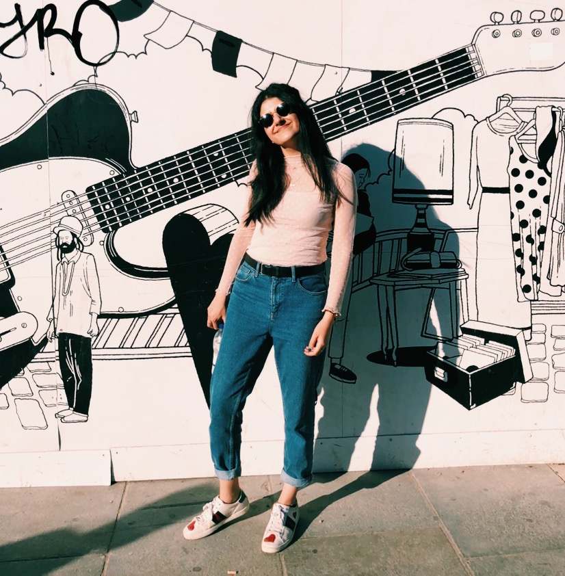

What are you studying?
I’m doing dentistry at Plovdiv University in Bulgaria, I was interested in doing it as I come from a medical background and I had the chance to do some work experience prior to studying dentistry. It has a good mix between work life and personal life which is appealing to me. It’s very interesting, I like how hands on it is which keeps me busy and occupied.
What is something new you have learnt?
I have merged with different types of people, some who are not open-minded as me. I’ve learnt to adapt to different types of people. Most importantly I have learnt how to manage my money, and learn how to budget - learning the value and meaning of money.
What is your experience as woman in a STEM based course?
I am very grateful for my position as a woman in STEM. I have found that more men are studying dentistry, so women are outnumbered on my course. It’s great women that more women are in medicine and engineering as opposed to men who are traditionally seen as the ones working. In european universities, they allow us to be very independent. Overall, my experience is really good even though we (women) are outnumbered.
What is the your happiest moment yet?
Genuinely the happiest I’ve been is, as my course is very stressful and time-consuming, is going to Japan.
What are you most looking forward too?
I’m most looking forward to the future, graduate and working and earning, and have my own money and do what I want to do. I hope to enjoy my job and being independent financially. I’m also going to Barbados in summer. I also hope to cook more complex dishes which include meat. I would really love to meet people from different cultures or learn a language like japanese or korean but I hope to in the future.